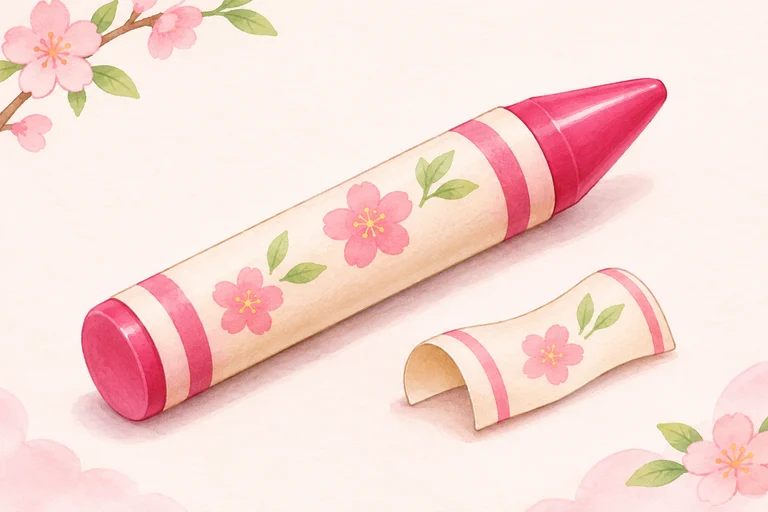
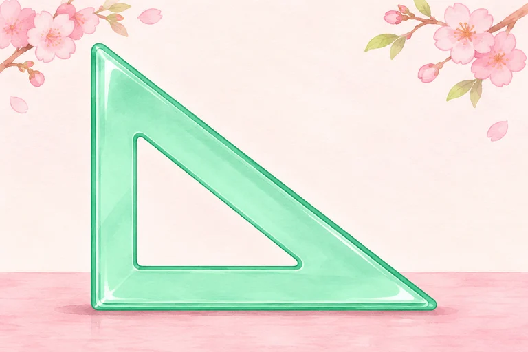
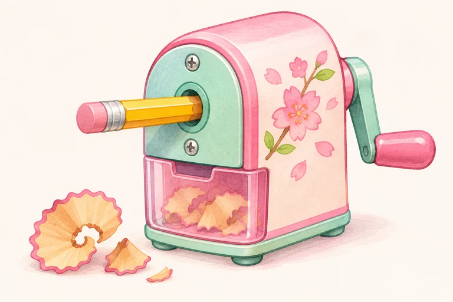

glue stick
hồ dán dạng thỏi
GLUESTICK
This is a glue stick.
Chưa đánh dấu
Unit 8 · Học trước, thử nhớ rồi luyện đề
Đồ dùng ở đâu và của ai? Nghe tên đồ dùng, thử nhớ vị trí rồi luyện hỏi đáp.
Giọng có sẵn trên thiết bị. Thiếu giọng Anh thì em vẫn xem chữ và luyện viết được.
Bấm Nghe khi em sẵn sàng. Trang không tự phát âm thanh.
Nghe cả từ/cụm, đọc theo rồi dùng ABC để nhớ cách viết. ABC đọc tên chữ cái, không phải bài luyện âm. Với cụm nhiều từ, các nhóm chữ được tách riêng.
Chưa có từ cần ôn. Em chọn một nhóm rồi bấm “Cần ôn lại” ở từ muốn luyện thêm nhé.
hồ dán dạng thỏi
This is a glue stick.
Chưa đánh dấu

bút sáp màu
This is a crayon.
Chưa đánh dấu

ê-ke
This is a set square.
Chưa đánh dấu

gọt bút chì
This is a pencil sharpener.
Chưa đánh dấu
hồ dán dạng thỏi (số nhiều)
These are glue sticks.
Chưa đánh dấu
bút sáp màu (số nhiều)
These are crayons.
Chưa đánh dấu
ê-ke (số nhiều)
These are set squares.
Chưa đánh dấu
gọt bút chì (số nhiều)
These are pencil sharpeners.
Chưa đánh dấu
bên cạnh
The pencils are beside the book.
Chưa đánh dấu
bên dưới
The erasers are under the desk.
Chưa đánh dấu
phía trên
The pictures are above the window.
Chưa đánh dấu
phía trước
The pens are in front of the clock.
Chưa đánh dấu
của ai
Whose glue stick is this?
Chưa đánh dấu
đây, này (một vật ở gần)
This is a set square.
Chưa đánh dấu
của bạn
Is this your crayon?
Chưa đánh dấu
Nghe hội thoại rồi đọc theo. “Đến lượt em” chỉ đọc A để em nói câu trả lời của B.
A: What is this?
B: It is a glue stick.
Một đồ dùng: It is a…
A: What are these?
B: They are crayons.
Nhiều đồ dùng: They are…
A: Where are the pencils?
B: They are beside the book.
Where are…? — They are… khi hỏi nhiều đồ dùng.
A: Where is the set square?
B: It is under the desk.
Where is…? — It is… khi hỏi một đồ dùng.
A: Whose pencil sharpener is this?
B: It is An’s.
An’s = của An; dấu ’s sau tên thể hiện sở hữu.
A: Is this your crayon?
B: No, it is not. It is Linh’s.
Đây không phải bút sáp của người trả lời; đó là của Linh.
Ví dụ tự soạn. Vị trí và sở thích là giả định theo từng ví dụ. Trang không thu âm hoặc tự chấm giọng của em.
Mỗi nhóm có bốn bài nhỏ, không giới hạn thời gian. Em được sửa rồi thử lại. Câu trả lời tự lưu để quay lại làm tiếp.